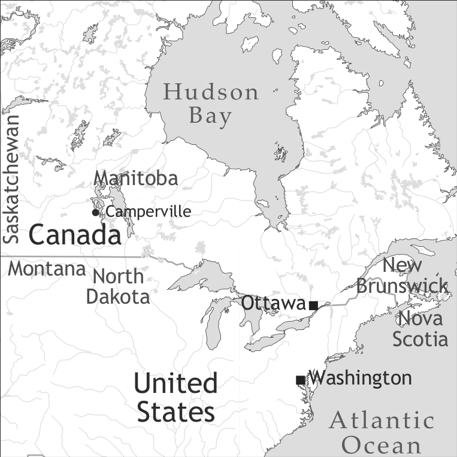

by Peter Bakker

Michif is spoken in several communities of people (called Métis) in Western Canada (Manitoba and Saskatchewan) and adjacent areas in the United States (North Dakota, Montana).
Michif is not a creole language. Michif is not a pidgin language. Michif is a mixed language, also called intertwined language. Roughly, it combines the verb phrase from Plains Cree with noun phrases from French. Most other intertwined languages combine the grammatical system (phonology, morphology, syntax, sometimes also lexical semantics) of one language with the vocabulary of another language (in this work represented by Ma’a/Mbugu and Media Lengua).
Michif must have come into being in the early decades of the 19th century. Interviews with Métis elders conducted in the 1980s about the language knowledge of their ancestors (as far as they could remember) revealed that several people born around 1840 spoke Michif as one of their languages. Also, the geographical spread of current and past Michif speaking communities in Canada and the USA (Manitoba, Saskatchewan, North Dakota, Montana, formerly Alberta) appear to correlate with settlement patterns connected to winter camps of the Métis bison hunters. Most of these settlements seem to date from the first decades of the 19th century. As the language in these communities is virtually identical, it must have crystallized in the first half of the 19th century.
The first mention in writing of Michif dates from the 1930s, and the first quotes in the language date from the 1970s. Apparently the language was spoken for a century, without any outsider knowing about it. This is all the more remarkable because the Métis are traditionally Catholics, and a range of literate priests were connected to their communities. Many of these priests were francophones, and some of them wrote quite extensively about the Métis or about the local indigenous languages (e.g. Father Belcourt), but no reference from books or diaries has been unearthed that mentions a language that must have been Michif. The explanation must be that the Michif speakers used it exclusively as an in-group language, and that they were also able to speak at least either French or a First Nations (indigenous) language such as Saulteaux or Cree, and later English, to be used with outsiders, including priests.
The first biologically mixed European-Amerindian babies, it is sometimes said, were born nine months after the arrival of the first Europeans. There is some controversy over the extent of mixed marriages in the different settlements on the east coast of what is now Canada, where the first contacts took place. There is increasing recognition of the prevalence of such connections, especially in Acadia (today roughly New Brunswick and Nova Scotia). Dickason (1985), however, has shown that this did not lead to a separate ethnic awareness of the people of mixed origin in the East. The children were raised in their mother’s tribe, or in the father’s community, and no shared mixed identity emerged.
Marriages between female members of indigenous groups and French fur traders in Western Canada and the adjacent parts of the USA became common from the second half of the 18th century, but earlier connections are also known. Thanks to the missions and their church records, and the oral history of the Métis, the genealogy of the Métis is fairly well known. In a number of cases, the ethnic affiliation of the First Nations wives can be identified as they are identified in church records as e.g. “Josephte Cree”. Seventeen marriages between men born in Europe or in French Canada and their First Nations wives identifiable as to their tribal affiliation have been documented between 1767 and 1812 for the area in question. Only two of the wives were Crees, 11 of them were Saulteaux/Ojibwes and the remaining four were Shoshone (Uto-Aztecan), Atsina (Plains Algonquian) and Assiniboine (Siouan). The question is then: if most of these marriage partners were Saulteaux speakers, why is Michif not a mixture of Saulteaux with French? This is probably because the Saulteaux used the more prestigious lingua franca Plains Cree outside of their immediate family ties (Rhodes 1982).
The events that may have triggered the emergence of a separate identity could be the resistance of the local mixed French-Amerindian people against the increasing use of the land by new settlers brought in by fur trading companies in the 1810s. From that decade, Métis songs have been preserved that identify the mixed people as a separate ethnic group (Bois Brûlés ‘burnt woods’), a Métis flag was devised and raised, and in political manifestos the Métis called themselves La Nouvelle Nation (‘The New Nation’).
Thus, the emergence of the Michif language can be linked to certain socio-cultural processes that were connected to historical events. The emergence of a new, mixed identity, including a form of distancing from both ancestral cultures and ethnicities, led to the genesis of distinct dress, foodways, mythology etc., all showing a more or less balanced mixture of elements from both ancestral traditions, and a portion of innovations.
Michif is spoken by a dwindling number of people, all of them beyond child-rearing age. It is spoken by few people in traditional Métis communities within a homeland that stretches some 1,000 kilometres east-west, and north-south. In all but perhaps two or three of these communities, the Métis are a minority. In all cases, the Michif speakers are a minority among the Métis, and thus also in these communities, even in their age groups. These circumstances are far from ideal for the preservation of the language and its transmission to younger generations. The prospects for the survival of the language look dim, despite increasing initiatives and projects to continue the language, both at the initiative of the communities and academics.
Due to the geographical spread in so many locations, the emigration of many speakers outside the homeland, and the fact that many Métis try to hide their identity due to severe discrimination (especially in the past), it is very difficult to estimate the number of Michif speakers. The number of people who speak Michif as their dominant language on a daily basis is probably close to one handful at the time of writing around 2010. The number of people who have knowledge of the language as they learned it in their youth is probably somewhere between 200 and 2,000. No parents speak the language to their young children, but some grandparents use it with their grandchildren.
Traditionally, the Métis have used a range of languages. Today, English is the dominant language in all communities, and probably also at the individual level for the vast majority of Michif speakers. Métis English varies from standard Canadian English to quite distinct ethnolects, with distinct pronunciation and to a limited extent different word choice.
There are three quite distinct languages that are sometimes called Michif by their speakers. Here we use other, distinct names in order to distinguish them. One of them, Métis French, is a distinct variety of French unique to the Métis. It differs in a few syntactic constructions from other varieties of Canadian French, including those spoken in the west. The possessive construction, for example, follows a Cree/Saulteaux model (‘the man his horse’ instead of ‘the horse of/for the man’). The most conspicuous differences, however, are found in the phonology. Especially the merger of the phonemes /o/ and /u/, and /e/ and /i/, make a Métis French speaker immediately recognizable. These differences can be ascribed to influence from Algonquian languages: northern dialects of Cree (Rocky Cree, Woods Cree, Northern Plains Cree) do not distinguish these phoneme pairs, and no Algonquian language distinguishes between /o/~/u/. This type of French is the source of the French component of the mixed language Michif, the subject of this article. It roughly combines Cree verbs with French nouns.
The third language that is sometimes called Michif by its speakers can be called Métis French Cree. It is spoken in Northwestern Saskatchewan, roughly between Green Lake and Buffalo Narrows, in Métis communities. It is a variety of Northern Plains Cree (niihiyawiiwin ‘Cree’; in Southern Plains Cree neehiyaweewin) in which a few hundred French loans are found, including some everyday words (Ahenakew 1997, many of them today replaced by English words; see also Bakker & Papen 2008). The use of the word “Michif” for this language is of recent date. Even though Michif and Métis French Cree combine Cree verbs and French nouns, the nature of both the Cree and French elements, as well as the type and nature of the combination, leave no doubt that they came into being independently of one another.
The phonology of Michif is complex and not well understood, despite a good deal of work on historical phonology (e.g. Rhodes 2009a) and synchronic phonology (e.g. Papen 2003, Rosen 2006, Rhodes 2009a, van Gijn 2009). The uncertainties and controversies have to do with several issues. First, some researchers claim that the French and Cree phonological systems are two distinct systems (segmental inventories, processes) (Papen 2003, Bakker 1997, Rhodes 1977, 1986), while some claim that it is not a stratified but a unitary system (Rosen 2007). Here, we will treat Michif as displaying two inventories and systems. Second, not all researches agree about the nature of the phonemes, and the contrasts they display.
For the consonants, it is probably best to distinguish four sets. Set 1 is only found in Cree words, set 2 only in French words, set 3 in both but in all or some cases with different sets of allophones (see Table 1).
|
Table 1. Consonants |
|
|
Set 1 (Cree only) |
hp ht hʃ hk (pre-aspirated stops) |
|
Set 2 (French only) |
f v z r l |
|
Set 3 (both) |
p t tʃ k kw m n w j h |
|
Set 4 (different distributions) |
b d g dʒ ʒ s ʃ |
(i) In Cree words [s] appears only in front of stops and thus e.g. [sC] is a variant of [hC]; Cree [s] only exists as an alternative pronunciation of the preaspirated [hC]; individual speakers usually use one or the other;
(ii) French /s/ contrasts with French /ʃ/, but this is not a contrast in the Cree part. French /s/ is a phoneme.
(iii) Voiced obstruents and sibilants /b, d, g, dʒ, ʒ/ in Cree contrast in initial position with their unvoiced counterparts, but not elsewhere in the Cree part. In the French part, the voiced and unvoiced stops always constitute two contrastive series.
(iv) Voiced stops also appear in a few Cree words due to a historical merger of a nasal consonant and voiceless stop after loss of the intervening vowel, e.g. pimbahta:w ‘he runs’ (cf. Plains Cree: pimipahta:w), doo ‘go and’ (cf. Cree nitawi).
The vowel system is considerably more complex. Rhodes (2009b) lists the sets for French and Cree, where virtually all vowels have two or more allophones (see Table 2).
|
Table 2. Vowels |
|
|
French part, oral |
i y u ɪ ɛ œ ɔ a ɑ |
|
French part, nasal |
æ̃ õ ɑ̃ |
|
Cree part, oral |
i: o: i o e: a: a |
These inventories are not the same as either French or Cree, not even in their local varieties. However, there are also a number of complications here. First, there are a few nasal vowels in the Cree part (/ĩ õ ɛ̃), probably under the influence of Ojibwe, and most likely inherited from the source dialect of southeastern Plains Cree (cf. Rhodes 2008: 573). Second, the vowels have a certain overlap, also between the two component languages (Rhodes 1986). Third, Rhodes (2009b) argues that in the recorded history of Michif, the length contrast of Cree and the quality contrast of French were undergoing a process of merger, where especially Cree vowel length was being reinterpreted in terms of French quality differences (cf. also Rosen 2006, who argues for an overall unified system for her Manitoba consultants). Fourth, there is a distinction between short and long vowels, which also is a difference in quality. This is true for both the Cree and the French components.
Michif stress is fairly unified across the component languages. The final-stress system of French and the alternating-stress pattern of Cree, with stress on each odd syllable from the end, are reasonably compatible. The difference between the two languages surfaces in longer French words (of which there are not that many in Michif), in which the stress pattern of Cree is followed, as in Michif /oˈtomoˌbɪl/ versus standard French /ˌotomoˈbil/ (see Rosen 2006 for a detailed analysis). This, however, is complicated by the fact that unstressed syllables can be dropped, and this also affects the stress system. Here again, Rosen (2006, 2007) argues it is the same process for both components (however, she does not clearly distinguish between historical processes and alternation between short vowels and deletion).
Speakers and linguists have used different writing systems. The system most often used now (to the extent that the language is written) is based on proposals by Rita Flamand and Robert A. Papen. This system is also used in the examples in this work. Some of the most important features are:
- Long vowels are indicated by double vowels, taking into account that the length difference is also a quality difference, and that the vowels from Cree and from French may not be identical;
- Nasal vowels are indicated by an <n> following the vowel; <nn> indicates a nasal consonant after a vowel;
- The digraph <eu> covers /y/ and /œ/; the symbol <y> is /j/;
- /ʒ/ is written <zh>, /ʃ/ is written <sh>, /tʃ/ is written <ch>, and /dʒ/ is written <dzh> or <j>;
- Pre-aspirated consonants are written <hC>, e.g. <hp>
- Other consonants have their usual IPA value.
Michif is roughly characterized by Cree verbs and French nouns. The Michif noun phrase is mostly French. French nouns can be accompanied by a range of modifiers. A deictic element is obligatory. This is a preposed element derived from the French articles (definite masculine /lɪ/ < French le, definite feminine /la/ < French la, indefinite masculine aen /æ̃/ < French un, indefinite feminine enn /æ̃n/ < French une, plural lii /li:/ < French les). The forms derived from the indefinite articles roughly function like indefinite articles in Michif as well. The French indefinite plural element des is not used, and lii marks definite and indefinite plurals. The singular “definite” forms are used in a wider range of contexts than their counterparts in French, for instance in (1):
(1) Niwiihkishtaen li sauce di prenn shesh.
I.like art sauce of prune dry
‘I like dried prune sauce’.
Number is expressed by the element lii preceding the French noun. Cree nouns are seldom used, and have a Cree plural suffix -ak (animate) or -a (inanimate). In addition, number is indicated in the agreement in Cree demonstratives, which have different forms depending on gender (animate, inanimate), number (singular, plural), spatial distance (close, intermediate, far), and pragmatic role (emphatic, non-emphatic).
A demonstrative is optional, and used for a more exact specification of the noun in discourse. These demonstratives are derived from Cree, and, as in Cree, agree in animacy and number with the nouns they modify (ana, awa, ooma, eekwanima, ekwana). No French demonstratives are used, except in a few frozen forms such as statonn ‘this fall’ (< cet automne).
Functions fulfilled by adjectives in European languages or stative verbs in creoles can be fulfilled in Michif by French adjectives and Cree verbal clauses, the latter roughly equivalent to relative clauses, but in one word: kaa-waapishi ‘who is white’ (kaa- ‘that’, waapishi- ‘be white’, -t ‘3SG’). These relative clauses most often follow the nouns. French adjectives are also commonly used. They follow or precede the nouns they modify, as they do in French. Whereas basically all adjectives in French agree in gender with the noun, only prenominal adjectives in Michif have distinct forms for the two genders, and postnominal adjectives do not display masculine/feminine gender agreement.
Numerals are from French except ‘one’: peeyak/hen, deu (/dy/), trwaa, kæt, sænk, sis, wit, naf, jis (/dʒis/).
Numerals invariably precede the nouns. However, several elements may intervene, and in fact numerals are usually separated from the rest of the noun phrase. The noun is marked for plurality with the article lii, e.g. (2):
(2) Trwaa giiwaapamaawak lii faam.
three I.saw.them art.pl woman
‘I saw three women.’
Non-numeral quantifiers mostly precede the noun, except optionally aanmas ‘many’ (< French en masse): lii pwasoon aanmas [art fish many] ‘many fish’. Quantifiers from both Cree and French are used. The quantifiers, like numerals, can be separated from the noun they refer to.
Relative clauses can be from French and Cree, with French or Cree verbs as a core. French relative clauses invariably follow the noun, whereas Cree relative clauses sometimes precede the noun.
The verb phrase is Cree, with few exceptions. Cree verbs agree with the subject in intransitive sentences, with the subject and object in transitive sentences, and with the subject and recipient object in ditransitive sentences. In addition, the verb has different forms depending on the animacy of the subject (in intransitives) and objects (in transitives) and depending on the status of the sentences (roughly, main clauses versus embedded clauses and clauses with a focussed element, including polar questions). One verb conjugation expresses inflection exclusively in suffixes, and the other uses both suffixes and prefixes.
In addition to person agreement, Michif verbs can contain affixes denoting tense, mood, aspect, voice, valence, sentence status (conditional).
Moreover, verbal stems are derived and contain at least two morphemes, traditionally called initials (expressing a state) and finals (expressing the way this came about and the grammatical status of the verb). These bimorphemic stems are sometimes accompanied by a medial, which can be an incorporated noun (of Cree origin) or a classificatory element, also of a nominal character (e.g. shape, material).
The following temporal, modal and aspectual markers are used (among others):
(i) Preverbal particles: These appear between the prefixed person markers and the verb stem, including manner elements and other preverbs.1
kii- (C) ‘preterit’ (refers to an action in the past)
ka- (C) ‘future’ (refers to an action in the future on which the actant has little control)
wii- (C) ‘future’ (refers to an action in the future on which the actant has control,
but also e.g. the weather).
kaakwee- (C) ‘try and’
maachi- (C) ‘start to’
(ii) Sentential adverbs (placement fairly free)
kayaash (C) ‘long time ago’
maana (C) ‘usually’
(iii) Sentence-initial adverbs
piko (C) ‘necessary’ (often followed by a subordinate clause with a future complementizer chi-)
sapraan (F) ‘it is necessary’
fubaen (F) ‘it is desirable’
sartaen (F) ‘it is certain’
pamwayaen (F) ‘it is impossible’
saspurabaen (F) ‘it is possible’
(iv) Full verbs
kashkiht- (C) ‘to be able’ (can be followed by subordinate clause)
ilikapab, zhikapab (F) ‘he is able, I am able’
(v) Subordinators: In subordinate clauses complementizers are used attached to the verbs:
chi-, shi- (C) ‘that (in the future)’
ee-, aen- (C) ‘while (at the same time)’
kaa- (C) has no temporal connotations, and refers to both prior and simultaneous actions.
The semantic relations between sentences can be made more specific by adding a subordinating particle from French or Cree preceding the verb, e.g. avaan ‘before’ (French), apree ‘after’ (French), meekwat ‘while’ (Cree), aata ‘although’ (Cree).
All in all, a Cree verb can in theory have a sequence of close to twenty consecutive morphemes. In practice, however, most verbs have at most four or five, including the two verbal stem morphemes, and never more than seven (see Bakker 2006 for a discussion of Cree morpheme order).
A few French verbs are used. The possessive verb ‘to have’ is French, and a copula ili from French il est ‘it is’ or si from French c’est ‘that is’ are also used with French adjectives, for both genders and numbers. In addition, a few French verbs are used, either an uninflected form (or with fossilized inflection) or incorporated into Cree verbs (see §8).
All in all, a Michif verb stem can have thousands of different forms, as in its source language Plains Cree.
The ordering of the S, A, and P arguments in Michif is governed by pragmatic considerations, not syntactic ones. One finds all orders: SVO, SOV, VSO, VOS, OVS, and OSV. No study has been done on their relative frequency, or the principles behind the different orders.
Impressionistically, verb phrases with a French verb tend to be more constrained in word order, in that verb-final orders have not been found.
Sentences can be modified by adverbs of different kinds. Temporal adverbs such as dimaen (F) ‘tomorrow’, yeer (F) ‘yesterday’, kayaash (C) ‘long time ago’, anush (C) ‘today’, achiyaw (C) ‘right now’, wiipat (C) ‘soon’, aashkaw (C) ‘sometimes’, sheemaak (C) ‘immediately’, maana (C) ‘usually’; and other types such as yaenk (F) ‘only’, mituni (C) ‘very’, keekat ‘almost’, pahkaan (C) ‘differently’, piyish (C) ‘finally’, eeshkam (C) ‘more and more’, uschitaw (C) ‘on purpose’.
A few adverbial particles have an evidential value: eesha (C) ‘as told in the story/fairy tale’, eetikwee (C) ‘apparently’, iteew (C) ‘it is said’.
A number of expressions can introduce sentences: saspurabaen (F) ‘it is likely’, piko (C) ‘it is necessary’, sapraan (F) ‘it is necessary’, sibaenraar (F) ‘rarely’.
Manner and other adverbs can also be integrated in the verb phrase, between the person markers and tense/mood/aspect, and the verb root: muhchi- ‘merely’, shuhki- ‘strongly’, pishchi- ‘accidentally’.
The lexicon of Michif was long thought to be unique in the world in that it has a verb-noun split. In the meantime, two languages have surfaced that also have such a split: Nigerian Okrika-Igbo mixed language, with Igbo verbs and Ijo nouns (Wakama n.y.), and Australian Gurindji Kriol (Meakins, this volume; McConvell & Meakins 2005).
In Michif, the verbs are from one language, Plains Cree, and the nouns from another, French. A calculation of the sources of words in the Swadesh list, however, does not yield a 50–50 distribution, as the list is clearly biased towards nouns. My calculation (100-word list) yields 52% French words, 29% Cree words, while 19% have both Cree and French equivalents. The double forms are mostly adjectives where both a Cree verb and a French noun are available, and some body parts that have French and Cree forms.
On the basis of text, the distribution of words is impressionistically roughly equal between the two languages.
The pronouns are from Cree, and have the exclusive/inclusive distinction (see Table 3).
|
Table 3. Personal pronouns |
|
|
1SG |
niya |
|
2SG |
kiya |
|
3SG |
wiya |
|
1PL.INCL |
kiyanaan |
|
1PL.EXCL |
kiyanaaw |
|
2PL |
kiyawaaw |
|
3PL |
wiyawaaw |
In addition, there is a series of emphatic or affirmative pronouns, such as nishta ‘me too’.
When we go beyond the verbs and nouns and look at the other categories, we can roughly say that question words, personal pronouns, and demonstratives come predominantly or exclusively from Cree, whereas numerals are from French, and adverbial particles, adpositions, conjunctions, and negative markers come from both languages. Table 4 is from Bakker (1997: 117).
|
Table 4. Approximate proportion of language source for each grammatical category |
|
|
Category |
Language(s) |
|
nouns |
83–94 % French, rest Cree, Ojibwe, English |
|
verbs |
88–99 % Cree, few French verbs, some mixed Cree-French |
|
question words |
almost all Cree |
|
personal pronouns |
almost all Cree |
|
adverbial particles |
70 % Cree, 30 % French |
|
postpositions |
almost all Cree |
|
coordinate conjunctions |
55 % Cree, 40 % French, 5 % English |
|
prepositions |
70–100 % French; rest Cree |
|
numerals |
Almost all French, except numeral „one” |
|
demonstratives |
almost all Cree |
|
negation |
Roughly 70 % French, 30 % Cree |
There is also some inter-community variation, in that some communities use almost exclusively French prepositions and others use also a fair number of Cree postpositions and prepositions.
In the vast majority of words, Cree and French elements are kept separate. However, there are a few exceptions. Cree has a nominal marker -(w)a that is used to distinguish two third persons in a discourse. The person who is not the topic of the stretch of discourse is marked with this so-called obviative marker, and the topic remains unmarked. This bound morpheme is also added to French nouns, but not as consistently as in Algonquian languages like Cree. Also, some speakers use the Cree-derived suffix -ipan when referring to French nouns denoting deceased persons. Further there can be Cree possessive suffixes to distinguish between inclusive and exclusive possession, for example ta laang-inaan ‘our language’ (inclusive), where ta ‘your’ is from French, and -inaan from Cree (1st person plural), versus not laang-inaan ‘our language’ (exclusive, or neutral). Finally, perhaps two dozen verbs from English and French are used with Cree person markers. These verbs (and adjectives) are always accompanied by the French element -li- before the stem and a long i: (from French -er) after the stem. For example: li-kãp-ii-wak ‘they are camping’. If there are person prefixes and an English verb is used, there can be four shifts between languages within one word:
(3) kii-li-muuv-ii-hiw
PST-le-move-i:-3SG
‘he moved’
The first morpheme is the Cree past tense marker kî, then French le, then the English verb move, then what seems to be the French infinitive marker -er, and finally a Cree third person intransitive suffix -iw with an inserted /h/.
There are a number of ways of combining clauses in Michif. In Michif there are two sets of inflected verbs. The independent order uses both prefixes and suffixes for the marking of person, and the conjunct order uses only suffixes. When there are two verbs in a sentence, one will be in the independent order and one in the conjunct order, except when they are juxtaposed.
Coordinate conjunctions are eekwa (C) and pi (F) ‘and’, ubaendon (F), ubaen (F) ‘or’ and maaka (C) and but ‘but’. The ones meaning ‘and’ and ‘or’ can connect both sentences and noun phrases.
Subordinate conjunctions include (from French) akooz ‘because’, zeusk(ataan) ‘until’, avaan ‘before’, apree ‘after’, aen koo ‘once, as soon as’, from Cree meekwat ‘while’, aata ‘although’, ita ‘where’, kiishpin ‘if’, -i ‘if’. The last one is the only suffixed complementizer in Cree, and there are also a few prefixed complementizers that have quite general meanings: kaa-, chii-, ee-.
Michif is probably unique in the world in its combination of two gender systems. It inherited the French distinction of masculine and feminine gender, and the Cree distinction between animate and inanimate gender. In Standard French, the gender difference is expressed in the definite and indefinite articles (le/la, un/une), in adjectival agreement (grand/grande) and in demonstratives (ce/cette). In Michif this gender distinction is found in the articles and in prenominal adjectives (gro/gros), but not in postnominal adjectives (one invariable form is used) or in demonstratives – no French demonstratives are used productively.
Gender in Cree is expressed in the verb agreement system (wâpam-êw ‘he/she sees him/her’, wâpaht-am ‘he/she sees it’), often in the shape of the verb stems, more concretely the stem final (wâpam- ‘see him/her’, wâpaht- ‘see it’), and always in the demonstratives (ana ‘this, animate’, oma ‘this, inanimate’). All of these are also used in Michif. Animacy is not synonymous with ‘alive’; means of transportation tend to be animate, as are some utensils and some plants.
Each noun thus has two genders, masculine or feminine and animate or inanimate, and that is also true for English borrowings: